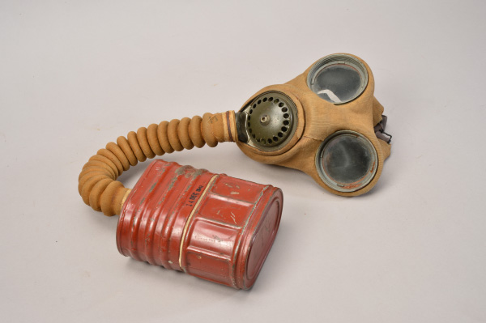
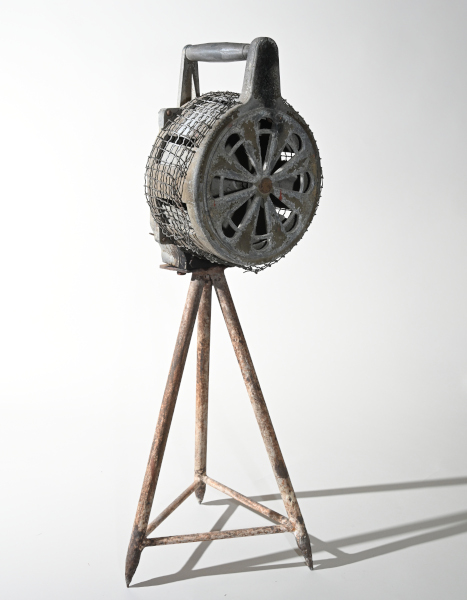
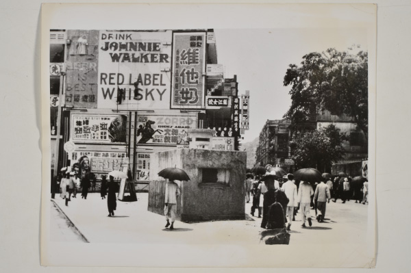
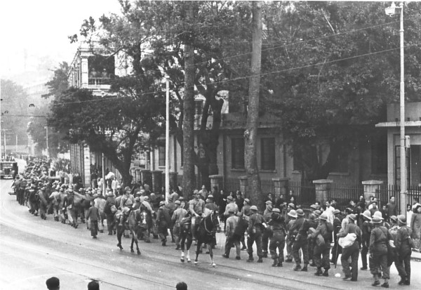

了解香港發展歷史，學習正確歷史知識（9號館主題）
本問答題庫圍繞9號展廳相關展品與歷史內容設置考題，認識香港保衛戰及日佔時期歷史。完成答題可查看得分與解析，樹立正確歷史觀。
9 號館主題為日軍侵港，全部敘事均依託博物館珍藏實物、歷史照片與戰地遺存展開，完整還原 1941 年十八天香港保衛戰全貌，分戰前備戰、戰時攻防及戰俘苦難三大板塊敘事。

▲ 防毒面具

▲ 空襲警報器

▲ 圖中的機槍堡位於皇后大道東和軒尼詩道（大佛口）交界，攝於1941年開戰前。
開篇展區以防空手搖警報器、英軍防毒面具及 1941 年市區機槍堡壘舊照為核心物證，還原開戰前香港全城備戰狀態。黑白老照片定格大佛口街頭機槍工事，搭配戰時防空防護器具，展現當年香港市民正面受空襲威脅、英軍倉促佈防的緊張時局，以實物印證香港防務儲備不足的歷史背景。
展廳中段為戰役核心展區，陳列日軍九二式野戰電話、軍用步槍、鋼盔與英軍遺留槍械等戰地軍械，搭配海陸攻防紀實影像，完整梳理日軍突襲、港島陣地拉鋸戰、守軍節節退守直至投降的過程。一件件銹蝕武器作為戰場直接遺存，具體還原十八天血戰的慘烈，見證守軍與平民殊死抵抗的不屈意志。

▲ 1941年12月25日香港淪陷後，戰俘在日軍看守下徒步前往戰俘營。
後半段聚焦淪陷後的戰俘苦難，以戰俘藏於瓶蓋的手寫家書複製品以及戰俘徒步被押往集中營歷史照片為敘事核心。黑白影像記錄英軍及本地守軍被日軍押送的場景，殘缺家書留存戰俘饑寒交迫、思念親人的文字，揭露三年零八個月日占時期戰俘營的殘酷淒慘境況，承載著戰爭帶給平民百姓的深重創傷。
整間展廳不依靠抽象文字敘事，全部以可觸摸、可觀賞的戰爭遺存物品為史料根基。軍械、防護用具、戰地影像、戰俘書信互為佐證，串聯起香港淪陷完整史實。展品無聲訴說家國苦難，既銘記軍民並肩抗爭的精神，也留存戰爭傷痛記憶，引導參觀者立足實物讀懂香港在全國抗戰中的獨特位置，以物證史，勿忘戰爭苦難，珍愛和平。
建議先觀看中文影片，認識9號館完整展覽脈絡
English version introduction video of Exhibition Hall 9